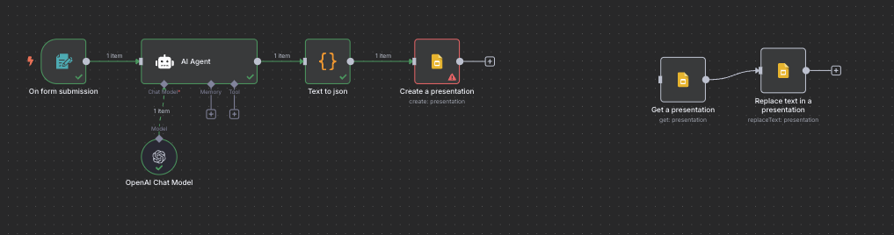
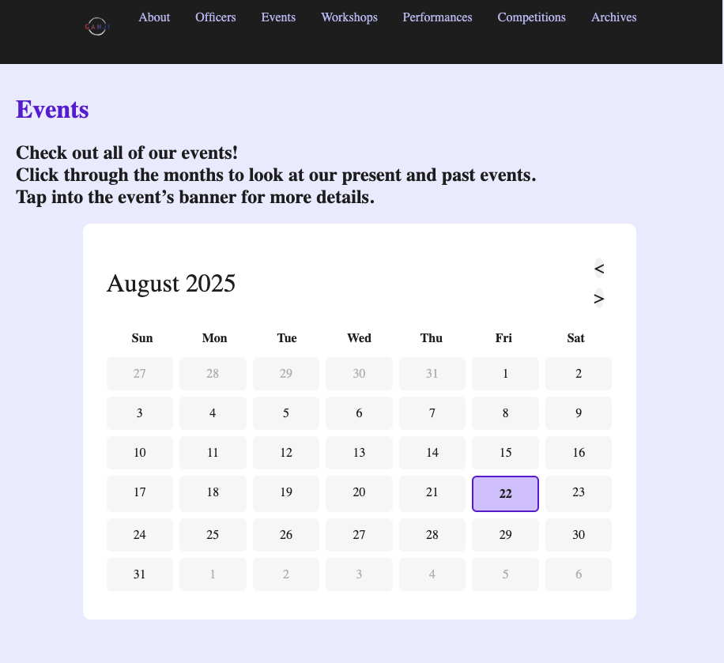
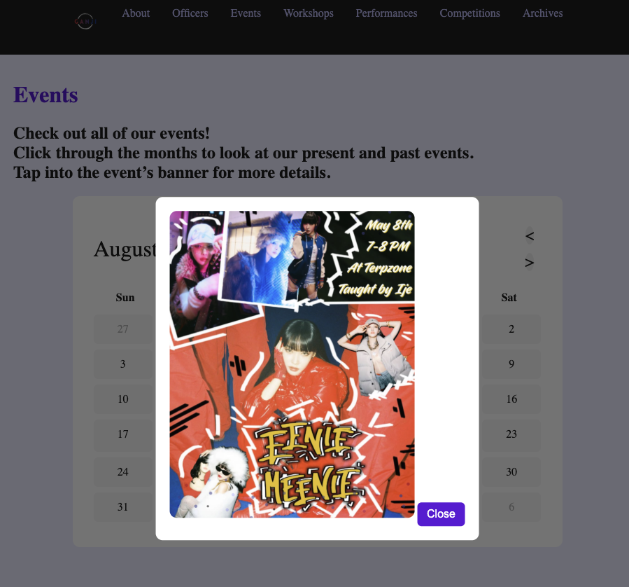
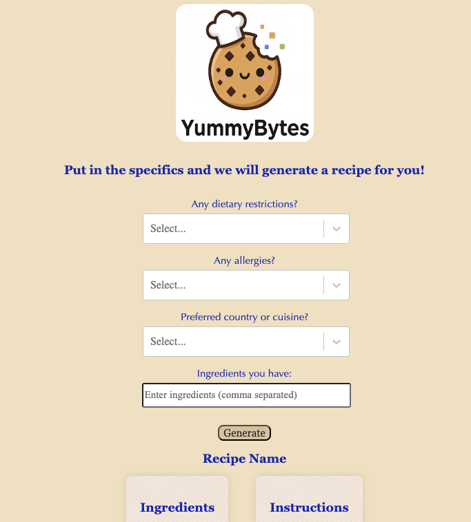
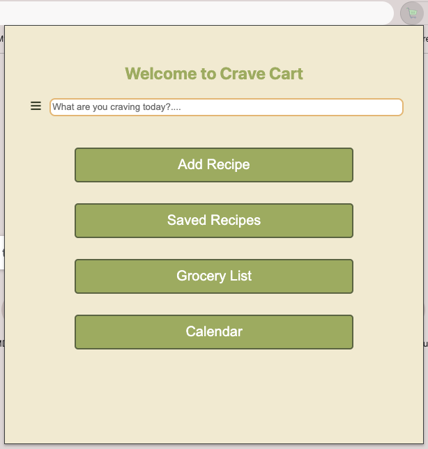
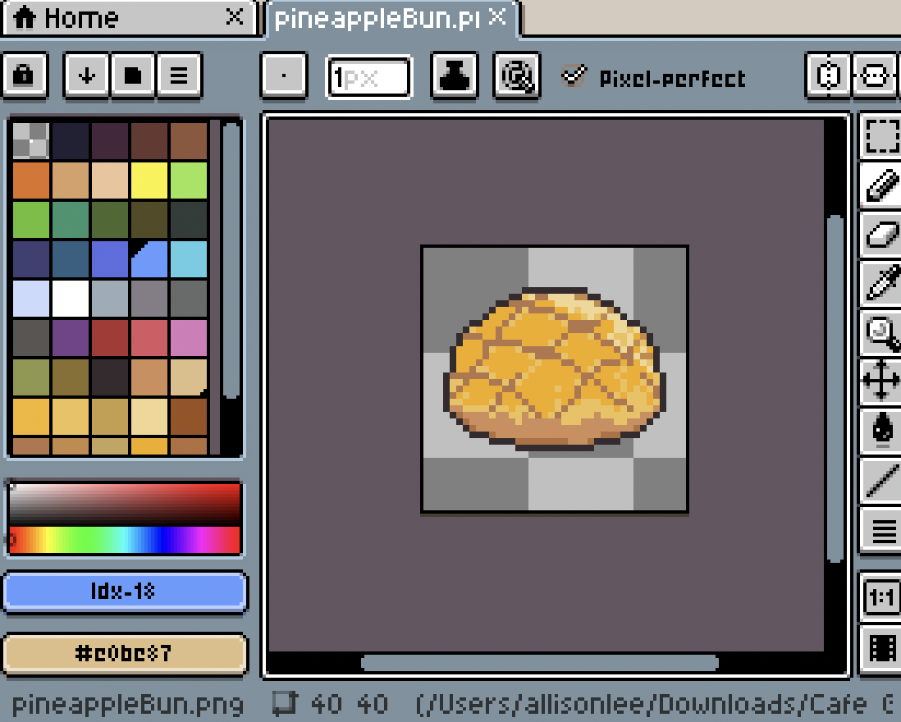
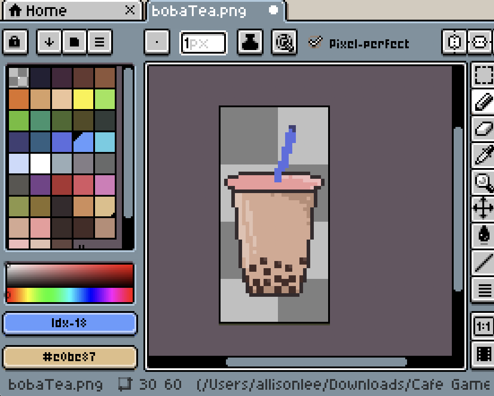

Hello, I'm a Junior at the University of Maryland majoring in Computer Science and minoring in S.T.E.P. (Science, Technology, Ethics, and Policy)
I have a growing passion in Web Development, UI, and Game Development!
Projects:
Automated Slides Generator
During my '25 summer internship at Washington Software, my initial project was researching and
learning AI prompting of OpenAI's CustomGPT builder. I built a custom IT tutor
where upon opening, users would be prompted questions and provided lessons in
return from their response. Utilizing n8n automation, I attempted at building a slides generator
with the customGPT. Users would open a form, fill it out, and n8n would automate the
process of fetching OpenAI information to place into a slideshow.

UMD Ganji Events Webpage
Over the '25 summer, I joined the Campus Coders Crew club of UMD to build
websites for clubs. Through the communication between clubs, we were able to
gather ideas and build websites to their club needs. I worked on a team with Ganji to
develop the events page of their website, implementing an interactive calendar
with customizable banners.


Yummy Bytes
At UMD's own Bitcamp '25 hackathon, I, alongside my team
utilized Gemini API to build an AI recipe generator according
to user prompts and dietary needs/restrictions.

Crave Cart
Working on a team in Open Sourcery at UMD, our project is Crave-Cart,
an extension that will collect and save recipes for users.
On the team, I have contributed HTML, JavaScript, and CSS aspects to
bring the extension and its features to life.

Puppy Cafe
Starting an ambitious project, I wanted to learn about all about game
development. Always being interested in how games are created, built,
and expanded, I decided to take on this learning journey and create a
game revolving around Taiwanese desserts and everyone's favorite,
puppies. The goal of the game is to be fun, interactive, and calming,
but also act as an encouraging schedule tracker. As of now,
I am designing game elements on Aseprite!


Reach out:
I would be more than happy to have a chat, so please reach out!